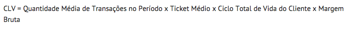

Métricas simples para produtos
Criado por Andrey Wallace
Por que medir?
"O que não pode ser medido não pode ser controlado e, consequentemente, não pode ser melhorado”
William Edwards
Pra que usar?
Estabelecer refências
Apoiar o plano de negócio
Avaliar produtividade
Fugir do achismo
Não faça as perguntas erradas
Que indicadores devemos usar?
Quantos indicadores devemos usar?
Se todo mundo usar aquele indicador eu tenho que usar também?
... Mão na massa!
Burn Rate - Fluxo de Caixa Negativo
CAC - Custo Aquisição Cliente
Investimentos / Clientes adquiridos

Custo Aquisição Usuário do Silent!
Investimentos / Clientes adquiridos
R$50 / 25 compras = R$2.0
R$2.000 / 10 compras = R$200.0
R$0 / 15 compras = R$0
R$100 / 40 compras = R$2.5
R$0 / 40 compras = R$0
Customer Lifetime Value (CLV) Quanto o cliente te dar de grana?
QMTP = Quantas vezes esse cliente compra da empresa a cada ano.
TM = valor médio que um cliente compra da empresa.
CTVC = tempo em que ele permanece na sua base de consumo
MB = sua margem após todos os descontos de custo relacionados a transação.
CLV do Silent!
CLV = 1 x 5 x 1 x 1 = R$5
CLV = 1 x 10 x 1 x 1 = R$10
CLV = 1 x 15 x 1 x 1 = R$15
CLV do TS ESTOQUE
CLV = 1 x 16 x 10 x 1 = R$160
CLV = 1 x 23 x 12 x 1 = R$276
Economia Unitária
CLV > CAC
Churn Rate - saída de clientes


Churn Rate - saída de clientes Silent!
CLV = ( 1500 / 8000 )X 100= 18,75%
CLV = (1800 / 10.000) x 100 = 18%
CLV = ( 200 / 1.200) x 100 = 16%
Tomadas de decisão
Continuar ou não continuar?